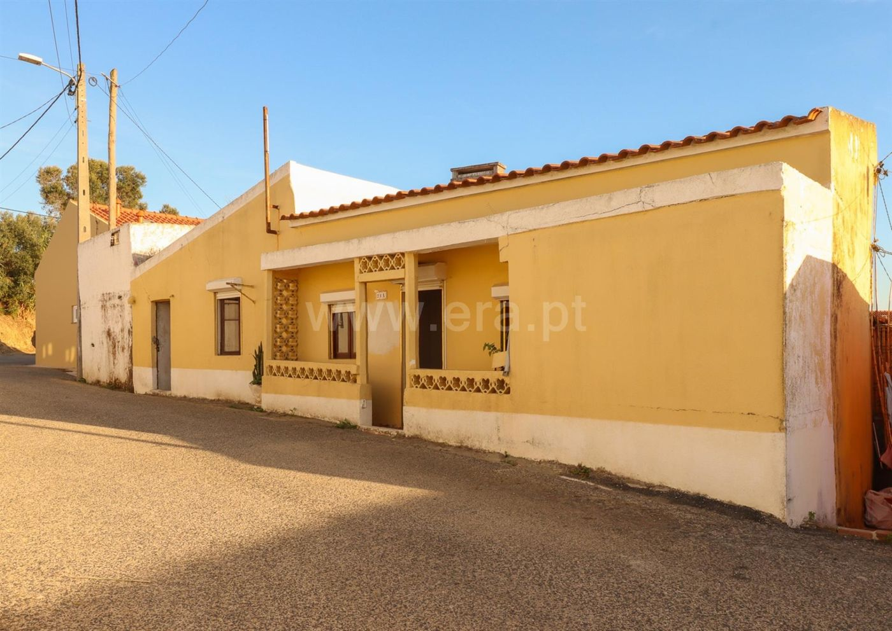

Casa da aldeia — 10 min de Torres Vedras
Hoje é uma habitação com um anexo. Aqui está a leitura das fotos divisão a divisão, e a proposta para a transformar em duas casas independentes para arrendar: a habitação passa a T3 compacto e o anexo, com o pátio, passa a T1 + escritório.
1 · O que cada foto mostra



Leitura da fachada, da esquerda para a direita
- Corpo branco baixo, com uma janela pequena: é o anexo (o quarto do postigo). O pátio fica por trás.
- Corpo amarelo com telhado inclinado, porta metálica cinzenta e uma janela com estore: ainda é o anexo. A porta cinzenta dá para a divisão do contador, que tem a porta para o pátio do tanque. O telhado de uma água bate certo com os tetos inclinados que se veem por dentro.
- Habitação com alpendre e grelhas de betão: porta n.º 20A ao centro e janelas de um lado e do outro. Por trás ficam a sala de entrada e a 2.ª sala, e atrás delas os quartos com teto em madeira.
- Parede cega à direita, com platibanda até à empena: ainda é a habitação. São divisões que recebem luz por trás ou pelo lado, provavelmente o quarto 3 e a alcova.
Ou seja: anexo primeiro, casa a seguir, cada um com porta própria para a rua. Isto encaixa no anúncio, que descreve de nascente para poente: “pátio + 4 divisões” (o anexo), depois “2 divisões” e “4 divisões” (a habitação, 6 divisões ao todo).
É fácil de reconhecer: chão em mosaico, rodapés, tetos acabados, portas envernizadas, estores.
- Sala de entrada: porta e janela para a rua, teto liso, mosaico cor de tijolo, quadro elétrico por cima da porta.
- Segunda sala (teto liso, o mesmo mosaico), ligada à primeira e com passagem para os quartos.
- Quarto 1: teto em lambrim de madeira escura, mosaico a imitar parquet.
- Quarto 2: igual, com janela de portadas e estore; reboco caído e humidade em baixo.
- Quarto 3 / sala de jantar: teto em madeira, lustre, chão em ladrilho vinílico antigo a descolar.
- Alcova com janela, ligada ao quarto 3 por um vão largo sem porta.
As divisões comunicam entre si por portas. São as 6 divisões à direita na fachada: o alpendre e a parede cega.
Também é fácil de reconhecer: chão em cimento, paredes caiadas ou pintadas de amarelo, tetos em lambrim branco inclinado a acompanhar o telhado.
- Cozinha antiga: lareira de cozinha com forno a lenha, bancada em tijoleira, e duas escoras metálicas a segurar o teto.
- Divisão de entrada do anexo: contador e quadro, manchas de ferrugem, porta direta para o pátio do tanque.
- Divisão amarela (distribuidor): duas portas para outras divisões, janela pequena alta, teto de duas águas, ninho de andorinha no canto.
- Quarto pequeno com um postigo (janela muito pequena) e humidade por baixo.
- Casa de banho antiga: sanita, bidé, lavatório e base de duche em cimento; humidade até meio metro de altura.
À esquerda na fachada: o corpo branco e o corpo amarelo da porta cinzenta, com o pátio por trás (4 divisões mais o WC).
Problemas que se veem (e que pesam no orçamento)
- alta Teto do anexo escorado: as escoras na cozinha querem dizer que a madeira do telhado cedeu ou apodreceu. O ninho de andorinha mostra que entram aves, ou seja, há aberturas. Conta-se já com telhado novo no anexo.
- alta Humidade que sobe do chão em toda a casa: salitre nos rodapés, reboco a cair, marca horizontal no WC.
- alta Possível amianto na chapa ondulada do pátio e no ladrilho vinílico antigo do quarto 3. Tem de ser analisado antes de partir; se der positivo, a remoção é feita por empresa certificada.
- média Fissura horizontal no topo da fachada e fissuras na empena: um engenheiro tem de ver.
- média Eletricidade e canalização antigas, para substituir. O WC atual não serve.
- média O quarto pequeno do anexo só tem um postigo. Para ser quarto, a janela tem de ser aumentada (a lei pede janela com pelo menos 1/10 da área do chão).
2 · Como deve estar organizada hoje (esquema)
Esquema de leitura, sem escala, feito a partir do anúncio e das fotos. A posição exata de cada divisão confirma-se na visita, com fita métrica.
3 · Proposta: duas casas
A separação já existe: habitação de um lado, anexo do outro, sem ligação entre os dois. Aproveita-se isso. Cada casa fica com entrada própria, contadores próprios e exterior privado, e quase não se mexe em paredes-mestras.
- As duas salas da frente abrem-se numa só: sala e cozinha juntas, com entrada pela porta atual da rua e o alpendre.
- Quartos 1 e 2 mantêm-se como estão; os tetos em madeira são tratados e ficam (dão carácter).
- Quarto 3: tira-se o vinílico antigo (com análise de amianto) e põe-se chão novo.
- A alcova passa a casa de banho completa, encostada aos quartos.
- Fica com as traseiras (cerca de 15–20 m²).
- Para quem: casal com 1 filho ou casal que precise de escritório. Os quartos são pequenos.
- Telhado novo (é aqui que estão as escoras) e chão novo sobre os cimentos.
- A porta cinzenta passa a porta de entrada da casa. A divisão de entrada e a divisão amarela abrem-se numa sala com cozinha; atrás fica um pequeno hall com a porta para o pátio.
- A antiga cozinha passa a quarto. A lareira com forno sai, ou fica como nicho decorativo se a estrutura o permitir.
- O quarto pequeno, que só tem um postigo, passa a escritório ou arrumos. Assim não é preciso aumentar a janela.
- O WC é refeito no mesmo sítio, porque a água e o esgoto já lá estão.
- Pátio: demolir as ruínas, ficar com um arrumo pequeno; o tanque vira canteiro ou é demolido.
- Para quem: pessoa sozinha ou casal que trabalha em Torres Vedras ou faz a A8 para Lisboa.
O ponto que decide tudo: o anexo está licenciado como habitação?
Na maioria das casas destas, o anexo está registado como dependência ou arrumos, não como casa. Para o arrendar como casa é preciso:
- pedir à Câmara a alteração de uso do anexo para habitação (com projeto);
- constituir propriedade horizontal (duas frações), ou outra forma de dividir o prédio aceite pela Câmara;
- ficar com licença de utilização para cada casa.
Antes de fazer uma oferta, pede a caderneta predial, a certidão do registo e a licença de utilização, e confirma na Câmara de Torres Vedras se este passo é possível. Se não for, a alternativa é arrendar a casa inteira como uma só, ou usar o anexo como apoio da habitação.
4 · Obra: o que fazer e por que ordem
- Visita com engenheiro civil: telhado do anexo, escoras, fissuras, humidades.
- Documentos: que área está licenciada, e com que uso (habitação ou anexo).
- Câmara: o anexo pode passar a habitação? A aldeia está numa ARU (Área de Reabilitação Urbana)?
- Análise de amianto (chapa e vinílico).
- Levantamento com medidas, projeto de arquitetura e especialidades.
- Alteração de uso do anexo e propriedade horizontal.
- Prazo realista: 4–8 meses.
- Limpeza e demolição das ruínas do pátio.
- Anexo: telhado novo. Habitação: rever as madeiras, pôr subtelha e isolamento.
- Humidade: corte na base das paredes, picar os rebocos e voltar a rebocar com argamassa de cal ou de saneamento; drenagem nas paredes de trás.
- Coser as fissuras e reforçar o topo da fachada.
- Eletricidade e água novas, com contadores separados para cada casa.
- 2 cozinhas e 2 casas de banho.
- Janelas com vidro duplo e corte térmico.
- Água quente com bomba de calor e ar condicionado nas salas.
- Habitação: manter o mosaico onde estiver bom. Anexo: betonilha e chão novo.
5 · Orçamento para ficar pronto a arrendar
Orçamento feito a partir das fotos, divisão a divisão, com acabamentos de gama média, resistentes e fáceis de manter, que é o que um inquilino espera numa casa de aldeia renovada. Valores com IVA a 23%, preços da região Oeste em 2026. Áreas do anúncio: 114 m² de área bruta privativa, que divido em cerca de 68 m² para a habitação e 46 m² para o anexo (divisão estimada). Confirmar tudo com medidas e 2 ou 3 orçamentos de empreiteiro.
| Trabalho | Valor |
|---|---|
| Comum às duas casas | |
| Levantamento, engenheiro, análise de amianto | 2 500 € |
| Projeto, licença, alteração de uso do anexo, propriedade horizontal e taxas | 10 000 € |
| Limpeza, contentores, demolição das ruínas do pátio | 4 500 € |
| Remoção de amianto (chapa e vinílico), se der positivo | 2 500 € |
| Certificados energéticos e licenças de utilização | 800 € |
| Subtotal | 20 300 € |
| Casa B · T3 compacto na habitação (~68 m²) | |
| Telhado: rever madeiras, subtelha, isolamento, telha revista | 7 000 € |
| Humidades: corte na base das paredes e rebocos novos | 4 700 € |
| Abrir a parede entre as duas salas, com viga | 2 000 € |
| Eletricidade nova, quadro, ITED | 4 500 € |
| Água e esgotos novos | 3 500 € |
| Casa de banho completa na alcova | 5 000 € |
| Cozinha com placa, forno e exaustor | 5 500 € |
| Janelas em PVC com vidro duplo e porta de entrada | 6 000 € |
| Chão novo na sala/cozinha e no quarto 3 (o resto mantém-se) | 1 300 € |
| Tetos de madeira lixados e pintados de claro | 1 300 € |
| Pintura interior | 2 600 € |
| Portas interiores | 1 500 € |
| Água quente por bomba de calor | 2 500 € |
| Ar condicionado na sala | 1 200 € |
| Fachada: fissura e pintura | 3 000 € |
| Subtotal | 51 600 € |
| Casa A · T1 + escritório no anexo, com pátio (~46 m²) | |
| Telhado novo (substitui as escoras) | 9 500 € |
| Humidades e rebocos novos | 4 300 € |
| Abrir a parede da sala e tirar o forno | 3 000 € |
| Betonilha com isolamento e chão novo | 3 800 € |
| Eletricidade nova e contador novo | 4 500 € |
| Água e esgotos novos | 3 500 € |
| Casa de banho refeita | 5 000 € |
| Cozinha com placa, forno e exaustor | 5 000 € |
| Janelas e portas exteriores | 4 500 € |
| Pintura interior | 1 700 € |
| Portas interiores | 800 € |
| Água quente por bomba de calor | 2 500 € |
| Ar condicionado na sala | 1 200 € |
| Pátio: chão, arrumo, estendal, muro divisório | 4 000 € |
| Subtotal | 53 300 € |
| Soma dos trabalhos | 125 200 € |
| Imprevistos (≈10%) | 12 500 € |
| Total para ficar pronto a arrendar | 137 700 € |
O que não está incluído: mobília (arrenda-se sem mobília), frigorífico e máquina de lavar (opcionais, cerca de 1 000 € por casa), juros de crédito e IMI durante a obra.
Versão económica: 50–80 mil € de obra
Dá para fazer mais barato se se aproveitar o que está razoável (mosaico, tetos de madeira, algumas janelas), com materiais de gama baixa e mais trabalho de gestão da tua parte. Há duas opções:
| Comum | |
|---|---|
| Engenheiro e levantamento | 1 500 € |
| Projeto, licença do anexo, propriedade horizontal | 8 000 € |
| Limpeza e demolição das ruínas do pátio | 3 000 € |
| Amianto (se der positivo) | 1 500 € |
| Subtotal | 14 000 € |
| Casa B · T3 compacto | |
| Telhado: trocar telhas partidas, caleiras, manta isolante sobre o teto | 3 000 € |
| Humidades: rebocos de cal só nas zonas afetadas | 2 500 € |
| Abrir a parede entre as duas salas | 1 500 € |
| Eletricidade nova (material económico) | 3 500 € |
| Água e esgotos | 2 500 € |
| Casa de banho simples na alcova | 3 500 € |
| Cozinha económica (tipo IKEA/Leroy, placa e forno) | 3 000 € |
| Trocar só as janelas piores | 2 000 € |
| Vinílico SPC na sala e no quarto 3 | 900 € |
| Pintura interior | 1 800 € |
| Termoacumulador | 450 € |
| Pintura da fachada | 1 500 € |
| Subtotal | 26 150 € |
| Casa A · T1 + escritório | |
| Telhado novo em painel sandwich com acabamento de telha | 7 000 € |
| Humidades e rebocos | 2 500 € |
| Abrir a parede da sala e tirar o forno | 1 500 € |
| Betonilha e vinílico SPC | 2 500 € |
| Eletricidade e contador novo | 3 500 € |
| Água e esgotos | 2 500 € |
| Casa de banho simples | 3 500 € |
| Cozinha económica | 2 800 € |
| Janelas e porta | 2 500 € |
| Pintura interior | 1 200 € |
| Portas interiores | 500 € |
| Termoacumulador | 450 € |
| Pátio: limpar, gravilha, estendal | 1 200 € |
| Subtotal | 31 650 € |
| Imprevistos (≈10%) | 7 200 € |
| Total | ≈ 79 000 € |
Rendas um pouco mais baixas por ser obra mais simples: 800–900 € + 550–650 €, ou seja, 16 200–18 600 € por ano.
| Engenheiro, limpeza, amianto, comunicação à Câmara | 4 000 € |
| Abrir porta entre o anexo e a habitação | 1 500 € |
| Telhado novo no anexo (painel sandwich com telha) | 7 000 € |
| Telhado da habitação: reparação | 3 000 € |
| Humidades e rebocos | 5 000 € |
| Eletricidade nova | 4 500 € |
| Água e esgotos | 3 500 € |
| 2 casas de banho simples | 6 000 € |
| 1 cozinha económica | 3 500 € |
| Janelas piores e porta | 3 000 € |
| Chão do anexo e do quarto 3 | 2 500 € |
| Pintura interior | 3 000 € |
| Termoacumulador | 450 € |
| Pátio básico | 1 200 € |
| Pintura da fachada | 1 500 € |
| Soma | 49 650 € |
| Imprevistos (≈10%) | 5 000 € |
| Total | ≈ 54 650 € |
Sem licença de alteração de uso nem propriedade horizontal: arrenda-se a moradia inteira, como já está registada (4 quartos, 2 casas de banho). Renda estimada de 950–1 100 €, ou seja, 11 400–13 200 € por ano.
| Rentabilidade bruta | Compra a 140 mil € | Compra a 100 mil € | Compra a 80 mil € |
|---|---|---|---|
| Opção 1 · duas casas (obra ≈ 79 mil €) | 7,3–8,3% | 8,9–10,2% | 10,0–11,5% |
| Opção 2 · uma casa (obra ≈ 55 mil €) | 5,7–6,6% | 7,2–8,4% | 8,3–9,6% |
O que se perde ao poupar
- Humidade: sem corte na base das paredes, o salitre volta em 2 a 4 anos e é preciso pintar outra vez.
- Conforto e certificado energético: sem isolamento a sério nem janelas novas em toda a casa, fica fria no inverno e com certificado fraco (D ou E). Isso baixa a renda e afasta inquilinos.
- Telhado da habitação: só reparado. Se as madeiras estiverem más, não há forma de poupar aqui.
- Gestão: para ficar nestes valores, tens de comprar materiais e coordenar os empreiteiros tu mesmo, em vez de pagar uma empreitada chave na mão.
6 · Quanto vale a casa?
O que estas áreas mudam
- Não há jardim a sério. Sobram cerca de 45–50 m² de exterior, repartidos entre o pátio do anexo (talvez 25–30 m²) e as traseiras da habitação (talvez 15–20 m²). Dá para uma esplanada e um estendal em cada casa, não para relva e churrasco.
- As casas são pequenas. Com 114 m² no total, um T3 + T2 não cabe com folga: a lei geral pede pelo menos 91 m² brutos para um T3 e 72 m² para um T2. Por isso a proposta passa a T3 compacto na habitação (os quartos já existem; na prática é um T2 com um quarto pequeno a mais) e T1 + escritório no anexo.
- O anexo, com cerca de 46 m², fica abaixo dos 52 m² que a lei pede para um T1 novo. O regime de reabilitação de edifícios antigos (DL 95/2019) permite que a Câmara aceite áreas menores, mas isto tem de ser confirmado antes de comprar.
Valor justo: três maneiras de fazer a conta
| Método | Conta | Valor |
|---|---|---|
| Comparação com a zona | 114 m² a 550–650 €/m², o preço por m² de casas para restaurar na Ventosa já com desconto de negociação | 63–74 mil € |
| Valor final menos a obra | Cerca de 210 mil € depois de pronta (a 2 000 €/m², o valor da avaliação bancária de referência), menos a obra económica (~79 mil €), menos 8 mil € de custos, menos 15% de margem para o risco | ≈ 90 mil € |
| Rentabilidade alvo de 8–9% bruto | 18 600 € de renda ÷ 8–9% dá 207–232 mil € de investimento total; menos a obra e os impostos | 66–92 mil € |
Referência real: avaliação bancária de 2025 na Freiria
Avaliação feita para um banco em julho de 2025 a uma moradia térrea T1 renovada, pronta a habitar, na Freiria (freguesia ao lado da Ventosa), com 65 m²:
| Valor de mercado | 132 000 € (2 000 €/m²) |
| Casas renovadas usadas na comparação, 2 delas na Ventosa | 1 860–2 290 €/m² |
| Custo de construção nova considerado | 1 300 €/m² |
| Valor do terreno considerado | 220 €/m² |
| Valor de venda imediata (−15%) | 112 200 € |
Aplicado a esta casa:
- Depois de pronta: 114 m² a cerca de 2 000 €/m², com algum desconto porque as paredes grossas tiram área útil, dá 190–235 mil €. Se for feita em duas casas: T1 de ~46 m² ≈ 95 mil € + T3 compacto de ~68 m² ≈ 135 mil €.
- No estado atual: terreno de 164 m² × 220 €/m² ≈ 36 mil €, mais o que as paredes e o telhado existentes ainda valem. Dá 60–80 mil €.
- Conclusão: com obra económica (~79 mil €), o preço máximo que faz sentido é cerca de 90 mil €. Com a obra completa (~138 mil €), baixa para 60–70 mil €. A 140 mil €, compra e obra juntas custam tanto ou mais do que a casa vale depois de pronta.
Quanto deve avaliar o banco (estado atual)
| Parte | Como o perito costuma contar | Valor |
|---|---|---|
| Habitação (~68 m²) | Moradia para recuperar a 700–850 €/m² | 48–58 mil € |
| Anexo (~46 m²) | Como dependência em mau estado, a 250–400 €/m² (vale menos do que área de habitação) | 12–18 mil € |
| Pátio e anexos em ruína | Já entram no valor do terreno; as ruínas não valem nada | — |
| Avaliação provável | 60–80 mil € |
- Para uma casa que não vai ser habitação própria, o banco empresta no máximo 80% do valor mais baixo entre o preço e a avaliação.
- Avaliação de ~75 mil € dá um empréstimo máximo de cerca de 60 mil €, seja qual for o preço. A 140 mil €, isso obriga a cerca de 80 mil € de capitais próprios, só para a compra. A 85 mil €, chegam cerca de 25 mil €.
- Para a obra: pedir crédito para aquisição e obras. O banco avalia também o valor depois da obra, com base no projeto e no orçamento, e liberta o dinheiro por fases à medida que a obra avança.
- A avaliação é um bom argumento na negociação: se o banco avaliar em ~75 mil €, os 140 mil € pedidos não se sustentam.
O que se vende na zona
- Moradia T3 para restaurar com 162 m², na Ventosa: 100 000 € (cerca de 620 €/m²).
- Moradia T2 térrea com 75 m²: 83 500 €.
- Ruína T3 com 70 m²: 63 000 €.
- T2 com 50 m², em acabamentos: 137 500 €. Mostra quanto vale uma casa pequena já pronta.
Preços pedidos em anúncios de 2026 (Imovirtual, RE/MAX, OLX), não preços de venda. Esta casa pede 1 109–1 228 €/m², ou seja, quase o dobro.
Rendas
- Na cidade de Torres Vedras, os T2 pedem cerca de 900–1 000 € e os T3 cerca de 1 300 € (apartamentos).
- Aqui, com casas pequenas e pouco exterior: casa B (T3 compacto) a 850–950 € e casa A (T1 com pátio) a 600–700 €.
- Total: 17 400–19 800 € por ano.
| Compra a 140 000 € | Compra a 100 000 € | Compra a 80 000 € | |
|---|---|---|---|
| Compra | 140 000 € | 100 000 € | 80 000 € |
| IMT, imposto do selo, escritura e registo (estimativa) | 4 200 € | 2 800 € | 2 400 € |
| Obra pronta a arrendar | 137 700 € | 137 700 € | 137 700 € |
| Investimento total | 281 900 € | 240 500 € | 220 100 € |
| Rentabilidade bruta (17 400–19 800 €/ano) | 6,2–7,0% | 7,2–8,2% | 7,9–9,0% |
| Rentabilidade líquida aproximada | 3,7–4,5% | 4,7–5,7% | 5,4–6,5% |
| Valor das duas casas depois de prontas | 190–235 mil € | 190–235 mil € | 190–235 mil € |
Estratégia de negociação
Com as áreas reais, 80 mil € já não é uma oferta agressiva: é um preço justo. Argumentos para levar por escrito:
- O preço pedido é de cerca de 1 100–1 230 €/m² para uma casa que precisa de obra total, quando na Ventosa há moradias para restaurar a cerca de 620 €/m².
- O teto do anexo está escorado e precisa de telhado novo.
- Há humidade em todas as divisões, e pode haver amianto na chapa e no chão vinílico.
- Não há casa de banho nem cozinha que se aproveitem, e a eletricidade e a canalização são para substituir.
- O anexo pode não estar licenciado como habitação e é pequeno.
- A obra fica em cerca de 138 mil €, mais do que o próprio preço pedido.
Plano: abrir a 70 mil €, tentar fechar entre 75 e 85 mil €, e desistir acima dos 95 mil €. A proposta deve ficar sempre condicionada à confirmação da Câmara sobre o anexo.
7 · Apoios e impostos a verificar
- IVA a 6% na empreitada, em vez de 23%, se o imóvel estiver numa ARU. Pode poupar 15 a 25 mil €.
- Benefícios de IMI e IMT para reabilitação em ARU, conforme o regulamento da Câmara.
- Contratos de arrendamento longos pagam menos IRS sobre as rendas. O Programa de Arrendamento Acessível pode dar isenção se a renda ficar abaixo do teto do concelho.
- Estas regras mudam com frequência: confirma com o contabilista e com a Câmara antes de assinar.
8 · Próximos passos
- Fazer a oferta (abrir a 70 mil €) e pedir caderneta predial, certidão do registo e licença de utilização.
- Confirmar na Câmara se o anexo pode passar a habitação e se o prédio pode ter duas frações. Se a resposta for não, o plano muda.
- Visitar com engenheiro e medir as divisões. Com as medidas reais, esta planta é refeita à escala.
- Pedir 2 ou 3 orçamentos de obra com base nesta proposta.
- Preço máximo a pagar: 95 mil €. Acima disto, a margem fica demasiado curta.